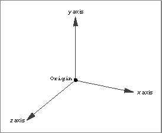

Using QuickDraw 3D
This section describes the most basic ways of using QuickDraw 3D. In particular, it provides source code examples that show how you canFor complete details on any of these topics, you should read the corresponding chapter later in this book. For example, see the chapter "Light Objects" for complete information about the types of lights provided by QuickDraw 3D.
- determine whether QuickDraw 3D is available
- initialize a connection to QuickDraw 3D and later close that connection
- create and configure geometric objects in a three-dimensional model
- specify a group of lights to illuminate those objects
- create a camera to specify a point of view and a method of projecting the three-dimensional model to create a two-dimensional image of the model
- render (that is, draw) the model
QuickDraw 3D currently is supported only on PowerPC-based Macintosh computers. It exists as a shared library, in two forms. A debugging version is available for use by developers while writing their applications or other software products. An optimized version of the QuickDraw 3D shared library is available for end users of those applications and other products. The debugging version provides more extensive information than the optimized version. For instance, the debugging version of QuickDraw 3D issues errors, warnings, and notices at the appropriate times; the optimized version issues only errors and warnings.
- IMPORTANT
- The code samples shown in this section provide only very rudimentary error handling. You should read the chapter "Error Manager" to learn how to write and register an application-defined error-handling routine, or how to determine explicitly which errors have occurred during the execution of QuickDraw 3D routines.

Compiling Your Application
In order for your application's code to work correctly with the code contained in the QuickDraw 3D shared library, you need to ensure that you use the same compiler settings that were used to compile the QuickDraw 3D shared library. Otherwise, it's possible for QuickDraw 3D to misinterpret information you pass to it. For example, all the enumerated constants defined by QuickDraw 3D are of theintdata type, where anintvalue is 4 bytes. If your application passes a value of some other size or type for one of those constants, it's likely that QuickDraw 3D will not correctly interpret that value. Accordingly, if the default setting of your compiler does not make enumerated constants to be of typeint, you must override that default setting, typically by includingpragmadirectives in your source code or by using an appropriate compiler option.There are currently three important compiler settings:
The interface file
- Enumerated constants are of the
intdata type.- Elements of type
charorshortthat are contained in an array that is contained in a structure may be aligned on non-longword boundaries.- Fields in a structure that contain pointers or data of type
long,float, ordoubleare aligned on longword boundaries.QD3D.hcontains compiler pragmas for several popular C compilers. For example,QD3D.hcontains this line for the PPCC compiler, specifying field alignment on longword boundaries for pointers or data of typelong,float, ordouble:#pragma options align=powerSome compilers might not provide pragmas for the three important compiler settings listed above. For example, the PPCC compiler does not currently provide a pragma for setting the size of enumerated constants. PPCC does however support the-enumscompiler option, which you can use to set the size of a enumerated constants.
- IMPORTANT
- Consult the documentation for your compiler to determine how to specify the size of enumerated constants and to configure structure field alignment so as to conform to the settings of QuickDraw 3D.
Initializing and Terminating QuickDraw 3D
Before calling any QuickDraw 3D routines, you need to verify that the QuickDraw 3D software is available in the current operating environment. Then you need to create and initialize a connection to the QuickDraw 3D software.On the Macintosh Operating System, you can verify that QuickDraw 3D is available by calling the
MyEnvironmentHasQuickDraw3Dfunction defined in Listing 1-1.Listing 1-1 Determining whether QuickDraw 3D is available
Boolean MyEnvironmentHasQuickDraw3D (void) { return((Boolean) Q3Initialize != kUnresolvedSymbolAddress); }TheMyEnvironmentHasQuickDraw3Dfunction checks to see whether the address of theQ3Initializefunction has been resolved. If it hasn't been resolved (that is, if the Code Fragment Manager couldn't find the QuickDraw 3D shared library when launching your application),MyEnvironmentHasQuickDraw3Dreturns the valueFALSEto its caller. Otherwise, if the address of theQ3Initializefunction was successfully resolved,MyEnvironmentHasQuickDraw3DreturnsTRUE.On the Macintosh Operating System, you can verify that QuickDraw 3D is available in the current operating environment by calling the
- Note
- For the function
MyEnvironmentHasQuickDraw3Dto work properly, you must establish soft links (also called weak links) between your application and the QuickDraw 3D shared library. For information on soft links, see the book Inside Macintosh: PowerPC System Software. For specific information on establishing soft links, see the documentation for your software development system.Gestaltfunction with thegestaltQD3Dselector.Gestaltreturns a long word whose value indicates the availability of QuickDraw 3D. Currently these values are defined:enum { gestaltQD3DNotPresent = 0, gestaltQD3DAvailable = 1 }You should ensure that the valuegestaltQD3DAvailableis returned before calling any QuickDraw 3D routines.You create and initialize a connection to the QuickDraw 3D software by calling the
- Note
- For more information on the
Gestaltfunction, see Inside Macintosh: Operating System Utilities.Q3Initializefunction, as illustrated in Listing 1-2.Listing 1-2 Initializing a connection with QuickDraw 3D
OSErr MyInitialize (void) { TQ3Status myStatus; myStatus = Q3Initialize(); /*initialize QuickDraw 3D*/ if (myStatus == kQ3Failure) DebugStr("\pQ3Initialize returned failure."); return (noErr); }Once you've successfully calledQ3Initialize, you can safely call other QuickDraw 3D routines. IfQ3Initializereturns unsuccessfully (as indicated by thekQ3Failureresult code), you shouldn't call any QuickDraw 3D routines other than the error-reporting routines (such asQ3Error_GetorQ3Error_IsFatalError) or theQ3IsInitializedfunction. See the chapter "Error Manager" for details on QuickDraw 3D's error-handling capabilities.When you have finished using QuickDraw 3D, you should call
Q3Exitto close your connection with QuickDraw 3D. In most cases, you'll do this when terminating your application. Listing 1-3 illustrates how to callQ3Exit.Listing 1-3 Terminating QuickDraw 3D
void MyFinishUp (void) { TQ3Status myStatus; myStatus = Q3Exit(); /*unload QuickDraw 3D*/ if (myStatus == kQ3Failure) DebugStr("\pQ3Exit returned failure."); }Creating a Model
As you learned earlier (in "Modeling and Rendering" on page 1-4), creating an image of a three-dimensional model involves several steps. You must first create a model and then specify key information about the scene (such as the lighting and camera angle). This section shows how to create a simple model containing three-dimensional objects.Objects in QuickDraw 3D are defined using a Cartesian coordinate system that is right-handed (that is, if the thumb of the right hand points in the direction of the positive x axis and the index finger points in the direction of the positive y axis, then the middle finger, when made perpendicular to the other two fingers, points in the direction of the positive z axis). Figure 1-5 shows a right-handed coordinate system.
Figure 1-5 A right-handed Cartesian coordinate system
- Note
- For a more complete description of the coordinate spaces used by QuickDraw 3D, see the chapter "Transform Objects" later in this book.

The model created by theMyNewModelfunction defined in Listing 1-4 consists of a number of boxes that spell out the words "Hello World." The words are written in block letters, with each letter composed of a number of individual boxes.MyNewModeluses the inelegant but straightforward method of defining the 34 boxes by creating four arrays of 34 elements each. As you'll see later (in the chapter "Geometric Objects"), a box is defined by four pieces of information, an origin and three vectors that specify its sides:typedef struct TQ3BoxData { TQ3Point3D origin; TQ3Vector3D orientation; TQ3Vector3D majorAxis; TQ3Vector3D minorAxis; TQ3AttributeSet *faceAttributeSet; TQ3AttributeSet boxAttributeSet; } TQ3BoxData;First,MyNewModelcreates a new and empty ordered display group to contain all the boxes. Then the function loops through the data arrays, creating boxes and adding them to the group.TQ3GroupObject MyNewModel (void) { TQ3GroupObject myModel; TQ3GeometryObject myBox; TQ3BoxData myBoxData; TQ3GroupPosition myGroupPosition; /*Data for boxes comprising Hello and World block letters.*/ long i; float xorigin[34] = { -12.0, -9.0, -11.0, -7.0, -6.0, -6.0, -6.0, -2.0, -1.0, 3.0, 4.0, 8.0, 9.0, 9.0, 11.0, -13.0, -12.0, -11.0, -9.0, -7.0, -6.0, -6.0, -4.0, -2.0, -1.0, -1.0, 1.0, 1.0, 3.0, 4.0, 8.0, 9.0, 9.0, 11.0}; float yorigin[34] = { 0.0, 0.0, 3.0, 0.0, 6.0, 3.0, 0.0, 0.0, 0.0, 0.0, 0.0, 0.0, 6.0, 0.0, 0.0, -8.0, -8.0, -7.0, -8.0, -8.0, -8.0, -2.0, -8.0, -8.0, -2.0, -5.0, -4.0, -8.0, -8.0, -8.0, -8.0, -8.0, -2.0, -7.0}; float height[34] = { 7.0, 7.0, 1.0, 7.0, 1.0, 1.0, 1.0, 7.0, 1.0, 7.0, 1.0, 7.0, 1.0, 1.0, 7.0, 7.0, 1.0, 3.0, 7.0, 7.0, 1.0, 1.0, 7.0, 7.0, 1.0, 1.0, 2.0, 3.0, 7.0, 1.0, 7.0, 1.0, 1.0, 5.0}; float width[34] = { 1.0, 1.0, 2.0, 1.0, 3.0, 2.0, 3.0, 1.0, 3.0, 1.0, 3.0, 1.0, 2.0, 2.0, 1.0, 1.0, 3.0, 1.0, 1.0, 1.0, 2.0, 2.0, 1.0, 1.0, 2.0, 2.0, 1.0, 1.0, 1.0, 3.0, 1.0, 2.0, 2.0, 1.0}; /*Create an ordered display group for the complete model.*/ myModel = Q3OrderedDisplayGroup_New(); if (myModel == NULL) goto bail; /*Add all the boxes to the model.*/ myBoxData.faceAttributeSet = NULL; myBoxData.boxAttributeSet = NULL; for (i=0; i<34; i++) { Q3Point3D_Set(&myBoxData.origin, xorigin[i], yorigin[i], 1.0); Q3Vector3D_Set(&myBoxData.orientation, 0, height[i], 0); Q3Vector3D_Set(&myBoxData.minorAxis, width[i], 0, 0); Q3Vector3D_Set(&myBoxData.majorAxis, 0, 0, 2); myBox = Q3Box_New(&myBoxData); myGroupPosition = Q3Group_AddObject(myModel, myBox); /*now that myBox has been added to group, dispose of our reference*/ Q3Object_Dispose(myBox); if (myGroupPosition == NULL) goto bail; } return (myModel); /*return the completed model*/ bail: /*If any of the above failed, then return an empty model.*/ return (NULL); }If successful,
- Note
- The
MyNewModelfunction can leak memory. Your application should use a different error-recovery strategy than is used in Listing 1-4.MyNewModelreturns the group object containing the 34 boxes to its caller.Configuring a Window
Usually, you'll want to display the two-dimensional image of a three-dimensional model in a window. To do this, it's useful to define a custom window information structure that holds all the information about the QuickDraw 3D objects that are associated with the window. In the simplest cases, this information includes the model itself, the view, the illumination shading to be applied, and the desired styles of rendering the model. You might define a window information structure like this:struct WindowInfo { TQ3ViewObject view; TQ3GroupObject model; TQ3ShaderObject illumination; TQ3StyleObject interpolation; TQ3StyleObject backfacing; TQ3StyleObject fillstyle; }; typedef struct WindowInfo WindowInfo, *WindowInfoPtr, **WindowInfoHandle;A standard way to attach an application-defined data structure (such as theWindowInfostructure) to a window is to set a handle to that structure as the window's reference constant. This technique is used in Listing 1-5.Listing 1-5 Creating a new window and attaching a window information structure
- Note
- For a more complete description of using a window's reference constant to maintain window-specific information, see the discussion of document records in Inside Macintosh: Overview.
void MyNewWindow (void) { WindowPtr myWindow; Rect myBounds = {42, 4, 442, 604}; WindowInfoHandle myWinfo; /*Create new window.*/ myWindow = NewCWindow(0L, &myBounds, "\pWindow!", 1, documentProc, (WindowPtr) -1, true, 0L); if (myWindow == NULL) goto bail; SetPort(myWindow); /*Create storage for the new window and attach it to window.*/ myWinfo = (WindowInfoHandle) NewHandle(sizeof(WindowInfo)); if (myWinfo == NULL) goto bail; SetWRefCon(myWindow, (long) myWinfo); HLock((Handle) myWinfo); /*Create a new view.*/ (**myWinfo).view = MyNewView(myWindow); if ((**myWinfo).view == NULL) goto bail; /*Create model to display.*/ (**myWinfo).model = MyNewModel();/*see Listing 1-4 on page 1-20*/ if ((**myWinfo).model == NULL) goto bail; /*Configure an illumination shader.*/ (**myWinfo).illumination = Q3PhongIllumination_New(); if ((**myWinfo).illumination == NULL) goto bail; /*Configure the rendering styles.*/ (**myWinfo).interpolation = Q3InterpolationStyle_New(kQ3InterpolationStyleNone); if ((**myWinfo).interpolation == NULL) goto bail; (**myWinfo).backfacing = Q3BackfacingStyle_New(kQ3BackfacingStyleRemoveBackfacing); if ((**myWinfo).backfacing == NULL) goto bail; (**myWinfo).fillstyle = Q3FillStyle_New(kQ3FillStyleFilled); if ((**myWinfo).fillstyle == NULL) goto bail; HUnlock((Handle) myWinfo); return; bail: /*If failed for any reason, then close the window.*/ if (myWinfo != NULL) DisposeHandle((Handle) myWinfo); if (myWindow != NULL) DisposeWindow(myWindow); }TheMyNewWindowfunction creates a new window and a new window information structure, attaches the structure to the window, and then fills out several fields of that structure. In particular,MyNewWindowcreates a new illumination shader that implements a Phong illumination model. You need an illumination shader for a view's lights to have any effect. (See the chapter "Shader Objects" for complete information on the available illumination shaders.) ThenMyNewWindowdisables interpolation between vertices of faces, removes unseen backfaces of objects in the model, and sets the renderer to render filled faces on those objects. These settings are actually passed to the renderer by submitting the styles during rendering. See "Rendering a Model," beginning on page 1-31 for details.
- Note
- The
MyNewWindowfunction can leak memory. Your application should use a different error-recovery strategy than is used in Listing 1-5.Creating Lights
When you use any renderer more powerful than the wireframe renderer, you'll want to create and configure a set of lights to provide illumination for the object in the model. As you've seen, QuickDraw 3D provides a number of types of lights, each of which can emit light of various colors and intensities. The functionMyNewLightsdefined in Listing 1-6 creates a group of lights. It creates an ambient light, a point light, and a directional light. See the chapter "Light Objects" for more details on creating lights.Listing 1-6 Creating a group of lights
TQ3GroupObject MyNewLights (void) { TQ3GroupPosition myGroupPosition; TQ3GroupObject myLightList; TQ3LightData myLightData; TQ3PointLightData myPointLightData; TQ3DirectionalLightData myDirLightData; TQ3LightObject myAmbientLight, myPointLight, myFillLight; TQ3Point3D pointLocation = { -10.0, 0.0, 10.0 }; TQ3Vector3D fillDirection = { 10.0, 0.0, 10.0 }; TQ3ColorRGB WhiteLight = { 1.0, 1.0, 1.0 }; /*Set up light data for ambient light.*/ myLightData.isOn = kQ3True; myLightData.brightness = .2; myLightData.color = WhiteLight; /*Create ambient light.*/ myAmbientLight = Q3AmbientLight_New(&myLightData); if (myAmbientLight == NULL) goto bail; /*Create a point light.*/ myLightData.brightness = 1.0; myPointLightData.lightData = myLightData; myPointLightData.castsShadows = kQ3False; myPointLightData.attenuation = kQ3AttenuationTypeLinear; myPointLightData.location = pointLocation; myPointLight = Q3PointLight_New(&myPointLightData); if (myPointLight == NULL) goto bail; /*Create a directional light for fill.*/ myLightData.brightness = .2; myDirLightData.lightData = myLightData; myDirLightData.castsShadows = kQ3False; myDirLightData.direction = fillDirection; myFillLight = Q3DirectionalLight_New(&myDirLightData); if (myFillLight == NULL) goto bail; /*Create light group and add each of the lights to the group.*/ myLightList = Q3LightGroup_New(); if (myLightList == NULL) goto bail; myGroupPosition = Q3Group_AddObject(myLightList, myAmbientLight); Q3Object_Dispose(myAmbientLight); /*balance the reference count*/ if (myGroupPosition == 0) goto bail; myGroupPosition = Q3Group_AddObject(myLightList, myPointLight); Q3Object_Dispose(myPointLight); /*balance the reference count*/ if (myGroupPosition == 0) goto bail; myGroupPosition = Q3Group_AddObject(myLightList, myFillLight); Q3Object_Dispose(myFillLight); /*balance the reference count*/ if (myGroupPosition == 0) goto bail; return (myLightList); bail: /*If any of the above failed, then return nothing!*/ return (NULL); }TheMyNewLightsfunction is straightforward. It fills out the fields of the relevant data structures (TQ3LightData,TQ3PointLightData, andTQ3DirectionalLightData) and calls the appropriate functions to create new light objects using the information in those structures. If successful, it adds those light objects to a group of lights. The group of lights will be added to a view, as shown in the following section.
- Note
- The
MyNewLightsfunction can leak memory.Creating a Draw Context
A draw context contains information that is specific to a particular type of window system, such as the extent of the pane to draw into and the method of clearing the window. You need to create a draw context and add it to a view in order to render a model. Listing 1-7 illustrates how to create a draw context for drawing into Macintosh windows.Listing 1-7 Creating a Macintosh draw context
TQ3DrawContextObject MyNewDrawContext (WindowPtr theWindow) { TQ3DrawContextObject myDrawContext; TQ3DrawContextData myDrawContextData; TQ3MacDrawContextData myMacDrawContextData; TQ3ColorARGB myClearColor; /*Set the background color.*/ Q3ColorARGB_Set(&myClearColor, 1.0, 0.6, 0.9, 0.9); /*Fill in draw context data.*/ myDrawContextData.clearImageMethod = kQ3ClearMethodWithColor; myDrawContextData.clearImageColor = myClearColor; myDrawContextData.paneState = kQ3False; myDrawContextData.maskState = kQ3False; myDrawContextData.doubleBufferState = kQ3True; /*Fill in Macintosh-specific draw context data.*/ myMacDrawContextData.drawContextData = myDrawContextData; myMacDrawContextData.window = (CWindowPtr) theWindow; myMacDrawContextData.library = kQ3Mac2DLibraryNone; myMacDrawContextData.viewPort = NULL; myMacDrawContextData.grafPort = NULL; /*Create draw context.*/ myDrawContext = Q3MacDrawContext_New(&myMacDrawContextData); return (myDrawContext); }Essentially,MyNewDrawContextjust fills in the fields of aTQ3MacDrawContextDatastructure and callsQ3MacDrawContext_Newto create a new Macintosh draw context.Creating a Camera
The remaining step before you can create a view is to create a camera object. A camera object specifies a point of view and a method of projecting the three-dimensional model into two dimensions. Listing 1-8 illustrates how to create a camera. See the chapter "Camera Objects" for complete details on the routines called inMyNewCamera.TQ3CameraObject MyNewCamera (void) { TQ3CameraObject myCamera; TQ3CameraData myCameraData; TQ3ViewAngleAspectCameraDatamyViewAngleCameraData; TQ3Point3D cameraFrom = { 0.0, 0.0, 15.0 }; TQ3Point3D cameraTo = { 0.0, 0.0, 0.0 }; TQ3Vector3D cameraUp = { 0.0, 1.0, 0.0 }; /*Fill in camera data.*/ myCameraData.placement.cameraLocation = cameraFrom; myCameraData.placement.pointOfInterest = cameraTo; myCameraData.placement.upVector = cameraUp; myCameraData.range.hither = .1; myCameraData.range.yon = 15.0; myCameraData.viewPort.origin.x = -1.0; myCameraData.viewPort.origin.y = 1.0; myCameraData.viewPort.width = 2.0; myCameraData.viewPort.height = 2.0; myViewAngleCameraData.cameraData = myCameraData; myViewAngleCameraData.fov = Q3Math_DegreesToRadians(100.0); myViewAngleCameraData.aspectRatioXToY = 1; myCamera = Q3ViewAngleAspectCamera_New(&myViewAngleCameraData); /*Return a camera.*/ return (myCamera); }Like before, theMyNewCamerafunction simply fills out the fields of the appropriate data structures and calls theQ3ViewAngleAspectCamera_Newfunction to create a new camera object.
- IMPORTANT
- All angles in QuickDraw 3D are specified in radians. You can use the
Q3Math_DegreesToRadiansmacro to convert degrees to radians, as illustrated in Listing 1-8, which sets thefovfield to 100 degrees.Creating a View
A view is a collection of a model, a group of lights, a camera, a renderer, and a draw context. Now that you've defined functions that create all the requisite parts of a view (except the renderer), you can create a view, as illustrated in Listing 1-9. To do this, you create a new empty view object and then explicitly add the parts to it.Listing 1-9 Creating a view
- IMPORTANT
- To create an image in a window, a view must contain at least a camera, a renderer, and a draw context.
TQ3ViewObject MyNewView (WindowPtr theWindow) { TQ3Status myStatus; TQ3ViewObject myView; TQ3DrawContextObject myDrawContext; TQ3RendererObject myRenderer; TQ3CameraObject myCamera; TQ3GroupObject myLights; myView = Q3View_New(); if (myView == NULL) goto bail; /*Create and set draw context.*/ myDrawContext = MyNewDrawContext(theWindow); if (myDrawContext == NULL) goto bail; myStatus = Q3View_SetDrawContext(myView, myDrawContext); Q3Object_Dispose(myDrawContext); if (myStatus == kQ3Failure) goto bail; /*Create and set renderer.*/ myRenderer = Q3Renderer_NewFromType(kQ3RendererTypeInteractive); if (myRenderer == NULL) goto bail; myStatus = Q3View_SetRenderer(myView, myRenderer); Q3Object_Dispose(myRenderer); if (myStatus == kQ3Failure) goto bail; /*Create and set camera.*/ myCamera = MyNewCamera(); if (myCamera == NULL) goto bail; myStatus = Q3View_SetCamera(myView, myCamera); Q3Object_Dispose(myCamera); if (myStatus == kQ3Failure) goto bail; /*Create and set lights.*/ myLights = MyNewLights(); if (myLights == NULL) goto bail; myStatus = Q3View_SetLightGroup(myView, myLights); Q3Object_Dispose(myLights); if (myStatus == kQ3Failure) goto bail; return (myView); bail: /*If any of the above failed, then don't return a view.*/ return (NULL); }Rendering a Model
To render a model using a view, you call QuickDraw 3D functions that submit the various shape objects (for instance, geometric objects, groups of geometric objects, and styles) that you want to appear in the view. Because a model might be too complex to process in a single pass (and for other reasons as well), you should call the rendering routines in a rendering loop. A rendering loop begins with a call to theQ3View_StartRenderingfunction and should end when a call to theQ3View_EndRenderingfunction returns some value other thankQ3ViewStatusRetraverse. Within the body of the rendering loop, you should submit the shapes you want rendered. Listing 1-10 shows the general structure of a rendering loop.Listing 1-10 A basic rendering loop
Q3View_StartRendering(myView); do { /*Submit your shape objects here.*/ Q3DisplayGroup_Submit(myGroup, myView); } while (Q3View_EndRendering(myView) == kQ3ViewStatusRetraverse);TheQ3View_EndRenderingfunction returns a view status value that indicates whether the renderer has finished processing the model. The available view status values are defined by these constants:typedef enum { kQ3ViewStatusDone, kQ3ViewStatusRetraverse, kQ3ViewStatusError, kQ3ViewStatusCancelled } TQ3ViewStatus;Listing 1-11 illustrates how to render the model defined in Listing 1-4 (page 1-20), using the view created and configured in Listing 1-9 (page 1-30). TheMyDrawfunction defined in Listing 1-11 retrieves the window information structure attached to a window and uses the information in it to render the model.Listing 1-11 Rendering a model
void MyDraw (WindowPtr theWindow) { WindowInfoHandle myWinfo; TQ3Status myStat; TQ3DrawContextObject myDrawContext; TQ3ViewStatus myViewStatus; if (theWindow == NULL) return; myWinfo = (WindowInfoHandle) GetWRefCon(theWindow); HLock((Handle) myWinfo); /*Start rendering.*/ myStat = Q3View_StartRendering((**myWinfo).view); if (myStat == kQ3Failure) goto bail; do { myStat = Q3Shader_Submit((**myWinfo).illumination, (**myWinfo).view); if (myStat == kQ3Failure) goto bail; myStat = Q3Style_Submit((**myWinfo).interpolation, (**myWinfo).view); if (myStat == kQ3Failure) goto bail; myStat = Q3Style_Submit((**myWinfo).backfacing, (**myWinfo).view); if (myStat == kQ3Failure) goto bail; myStat = Q3Style_Submit((**myWinfo).fillstyle, (**myWinfo).view); if (myStat == kQ3Failure) goto bail; myStat = Q3DisplayGroup_Submit((**myWinfo).model, (**myWinfo).view); if (myStat == kQ3Failure) goto bail; myViewStatus = Q3View_EndRendering((**myWinfo).view); } while (myViewStatus == kQ3ViewStatusRetraverse); HUnlock((Handle) myWinfo); return; bail: HUnlock((Handle) myWinfo); SysBeep(50); }The rendering loop allows your application to work with any current and future renderers that require multiple passes through a model's data in order to provide features such as transparency and CSG.For complete information about rendering loops and other kinds of submitting loops, see the chapter "View Objects" in this book.